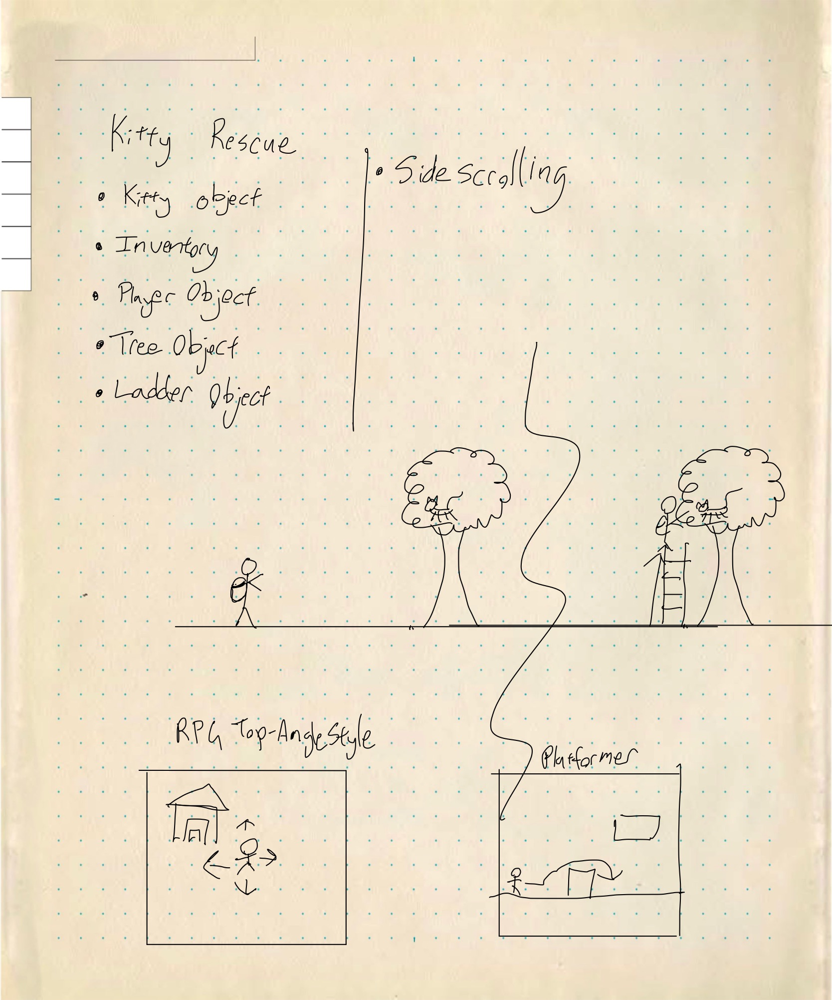
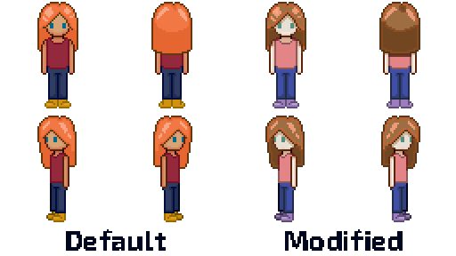
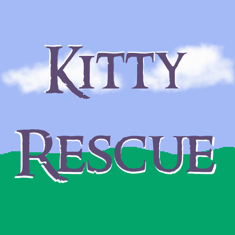

Kitty Rescue - A Demo Game Made Using Godot
Overview
Kitty Rescue is a game demo that I created for self-practice while learning Godot (an open-source game engine). I created this project in 2021. The original idea of the game was to create a pixel art game where you rescued creatures from different environments. To limit the scope, cats were chosen as the creature to rescue due to the “cat up a tree” trope and the fact that they are considered cute. I created some of the graphic assets, while other assets are from free assets or assets that I own the license to use for personal or commercial purposes.
Research and UX Design Process
I did some light research on what types of games are at the top of mobile game lists and what do well on Steam (a digital store for video games) . For non-realistic graphic games, it often either needs to have cute characters or be a deep game that draws people into the story. Some, like Stardew Valley, are considered to have both. Since I was making this as a demo project, I opted to draw on the cute graphics aspect.
As previously mentioned, the objective was to make a game demo where the player rescues cats. One early-stage idea was to rescue turtles. I personally like turtles, but cats were determined to be cuter by an informal poll among friends and family.
Users want intuitive controls, and for the UI to give information without distracting from game play. As this was a personal project demo, my user tests were limited to family members and was done close to contextual interview style and A/B Testing.
The Problem
How do we create a cute game to rescue animals where the user is drawn in with minimal information being dumped on them?
Ideation Steps, Solution, Iteration
I sketched out different early designs using Procreate and GoodNotes on the iPad. I needed to decide what style of game it should be. I narrowed the choice down to side-scroller/platformer style (think Super Mario) and top down RPG style (think older Pokemon Games). I opted for RPG Top down style, as it would seem less strict on pacing than a platformer.

Early stage note on game style.
I ultimately went with a character design (Sam) from
Pop Shop Packs, and then modified the colors for practice and to not clash with the grass and nature assets. After my initial sketches of cats in the design idea phase, I opted to use the cat assets from them to save work. I put the different assets I had next to each other using Aseprite and refined my color palette into a specific mood (peaceful, happy) without oversaturating.

Character model sample.
After this step I started on the game prototype. One early prototype had the cat disappear when it got in range of the character with the explanation that it was rescued. This was deemed too jarring when I had a few people try out the prototype, so I went with the cat herding mechanic instead. This slowed the gameplay for collecting the cats but was seen as a better mechanic; the cats will wander off if you get too far from them and also gives them the appearance of rubbing on the characters legs while walking. These changes added to the cuteness of the game, according to follow up tests when comparing the versions. I simplified the UI to mostly just images of a cat being colored in to let a player know when they had a cat following them or not since this game did not need any kind of health indicator.

Earlier version of logo
Below you can see the end results of the demo. The player gets the load/splash screen then chooses what to do through the mouse on the menu. The in-game controls were limited to the four directions and then one key for interaction. Based off of past experience, the C key was chosen as the interaction key, while both the arrows and WASD could be used to control the character. A cat will follow a player if the player gets in range, and the goal is to lead all of the kitties on the level to the circle, portrayed as a giant yellow rug like object.
Next Steps and Learning
If I were to further develop this demo into a full-fledged game, I have a list of improvements and features I would add:
-
Give the game more story and create more levels.
-
Some unused elements included fire hydrants that had to be cut off with a wrench and doors that needed keys to open, so I would add levels where cats needed to be rescued from city environments.
-
Further refine the art assets.
-
Implement save files.
-
Add back in the semi-transparent directional pad in the bottom left of the screen and aim the game at a mobile market for release.
I learned much about game and product design from this demo.
-
I was able to observe a user playing the game and how they interacted with it. This taught me more about the practical side of directed UIs where options are limited.
-
I fine-tuned my practical Godot knowledge.
-
While creating this demo I was able to see what elements could be modularized. For example, the bushes that can be chopped and the cats both use the same underlying element to see if the player is within their range.
-
I greatly appreciated when I was able to get user feedback to adjust my designs and art assets.